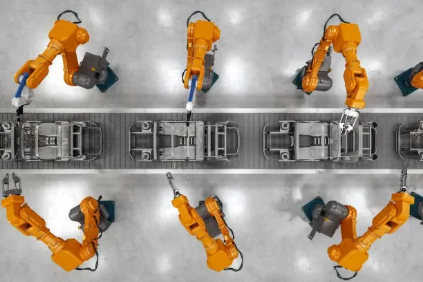

O erro orienta a correção
Um sistema em malha fechada mede o que aconteceu e usa essa informação para corrigir o próximo comando. A referência, ou setpoint, é o valor desejado; a medição é o estado observado. O erro é referência − medição.
O controlador PID combina três parcelas: proporcional, integral e derivativa. Ele pode regular velocidade, posição ou outra grandeza, desde que a medição e a atuação sejam definidas. O desempenho depende também do sensor, do atuador, do atraso e da dinâmica do sistema.
Defina qual grandeza será controlada, sua unidade, o intervalo entre atualizações e os limites do comando. Confira o sinal: uma correção positiva precisa mover a medição na direção esperada.
As parcelas P, I e D
| Parcela | Cálculo conceitual | Efeito e limitação |
|---|---|---|
| P · proporcional | Kp × erro atual | Aumenta a reação ao desvio. Ganho excessivo pode causar oscilação. |
| I · integral | Ki × soma do erro ao longo do tempo | Ajuda a reduzir erro persistente. Pode acumular demais quando o atuador satura. |
| D · derivativa | Kd × taxa de variação | Reage à rapidez da mudança. Pode amplificar ruído da medição. |
No tempo contínuo, uma forma paralela é u(t) = Kp·e(t) + Ki·∫e(t)dt + Kd·de(t)/dt. Em código, a integral acumula erro × dt e a derivada usa uma diferença dividida por dt. O intervalo deve estar em uma unidade consistente, como segundos.
Nem toda aplicação precisa das três parcelas. P, PI e PD são escolhas válidas. A integral não resolve uma referência fisicamente impossível, e a derivada não prevê o futuro: ela reage à taxa de mudança.
A documentação do controlador PID da MathWorks apresenta formas contínuas e discretas, filtragem e tratamento de saturação.
Experimente em uma simulação
Este programa usa somente Python 3 e simula um sistema fictício de primeira ordem. A saída permitida vai de 0 a 2; a referência muda de 0 para 1 após 0,5 s. Os valores não são ganhos prontos para um motor ou drone.
dt = 0.02
kp, ki, kd = 2.0, 0.8, 0.08
minimo, maximo = 0.0, 2.0
medida = 0.0
medida_anterior = medida
integral = 0.0
derivada_filtrada = 0.0
tau_filtro = 0.05
print("tempo,referencia,medida,comando")
for passo in range(251):
tempo = passo * dt
referencia = 1.0 if tempo >= 0.5 else 0.0
erro = referencia - medida
# Derivar a medida evita um pico causado pelo salto da referencia.
derivada = -(medida - medida_anterior) / dt
alfa = dt / (tau_filtro + dt)
derivada_filtrada += alfa * (derivada - derivada_filtrada)
integral_candidata = integral + erro * dt
livre = kp * erro + ki * integral_candidata + kd * derivada_filtrada
# So acumule se nao agravar uma saturacao.
agrava = ((livre > maximo and erro > 0) or
(livre < minimo and erro < 0))
if not agrava:
integral = integral_candidata
comando = kp * erro + ki * integral + kd * derivada_filtrada
comando = max(minimo, min(maximo, comando))
if passo % 25 == 0:
print(f"{tempo:.2f},{referencia:.2f},{medida:.3f},{comando:.3f}")
medida_anterior = medida
# Planta ficticia: resposta de primeira ordem, constante 0.6 s.
medida += dt * (comando - medida) / 0.6Execute com python pid_simulado.py. A tabela começa com medição zero e passa a mostrar sua aproximação à referência. Redirecione a saída para um CSV se quiser fazer um gráfico. Compare a resposta com ki = 0 e depois restaure o valor; use a mesma duração e condição inicial.
A derivada é aplicada à medição e filtrada. A integração é suspensa quando aumentaria a saturação, uma forma simples de anti-windup. O modelo omite ruído, atrito e atraso de comunicação: acrescente esses efeitos antes de tirar conclusões sobre hardware.
Ajuste com um critério

Métodos de sintonia que provocam oscilação sustentada não são um primeiro ensaio adequado para qualquer equipamento. Comece em simulação e respeite o procedimento do sistema real.
Interprete os sintomas
| Sintoma | Hipóteses para verificar |
|---|---|
| Correção afasta o sistema da referência | Sinal de erro ou sentido do atuador invertido. |
| Comando no limite por muito tempo | Referência inalcançável, ganho excessivo ou integral acumulada. |
| Comando muito ruidoso | Medição ruidosa, derivada excessiva ou período irregular. |
| Mesmo ganho se comporta diferente | Mudança de carga, alimentação, unidade ou intervalo de amostragem. |
Ao desativar o controle ou trocar de modo, pense no estado acumulado da integral. Em um seguidor de linha, perder a pista exige uma política específica; continuar integrando uma posição inválida produz uma correção sem significado.
Próximos passos
O PID transforma erro em comando, mas precisa de limites, amostragem e avaliação. Guarde um registro da simulação com P, PI e PID e descreva o que cada parcela mudou.
Para aplicar a ideia, estude o seguidor de linha. Calibre os sensores antes de ajustar ganhos e confirme qual sentido da correção faz o robô voltar à pista.